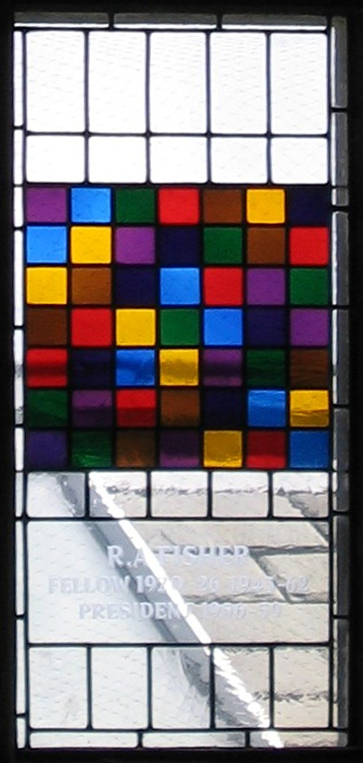

The square below has each letter appearing only once in each row and column. How many such squares are there?
| A | B | C | D |
| B | A | D | C |
| C | D | B | A |
| D | C | A | B |
A study was conducted to compare the effect that three diets had on milk production in cows: full grain, partial grain, and roughage. A cohort of cows was recruited after giving birth, when milk production is highest. Once their new diet began, they would sustain it for 6 weeks and then measure milk production. The farm can only offer a single diet at any given time.
4 Components of the Experiment
CR: units assigned to treatments completely at random
CB: units assigned to treatments at random within blocks (each treatment assigned exactly once per block).
CB: units assigned to treatments at random within blocks (each treatment assigned exactly once per block). There are be more than one blocking factor.
LS: A Latin Square design is a special case of a CB design with two blocking factors.
The square below has each letter appearing only once in each row and column. How many such squares are there?
| A | B | C | D |
| B | A | D | C |
| C | D | B | A |
| D | C | A | B |
| Type | g=2 | g=3 | g=4 | g=5 |
|---|---|---|---|---|
| standard | 1 | 1 | 4 | 56 |
| all LS | 2 | 12 | 576 | 161280 |
\[ Y_{i} = \mu + \alpha_{j(i)} + \beta_{k(i)} + \delta_{l(i)} + \epsilon_i \]
Note:
